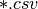
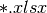

Data analysis procedures¶
Note
Know yourself and know your enemy, and you will never be defeated – idiom, from Sunzi’s Art of War
procedures¶
Data mining is a complex process that aims to discover patterns in large data sets starting from a collection of exsting data. In my opinion, data minig contains four main steps:
- Collecting data: This is a complex step, I will assume we have already gotten the datasets.
- Pre-processing: In this step, we need to try to understand your data, denoise, do dimentation reduction and select proper predictors etc.
- Feeding data mining: In this step, we need to use your data to feed your model.
- Post-processing : In this step, we need to interpret and evaluate your model.
In this section, we will try to know our enemy – datasets. We will learn how to load data, how to understand data with statistics method and how to underdtand data with visualization. Next, we will start with Loading Datasets for the Pre-processing.
Datasets in this Tutorial¶
The datasets for this tutorial are available to download: Heart, Energy Efficienency. Those data are from my course matrials, the copyrights blongs to the origial authors.
Loading Datasets¶
There are two main data formats “.csv” and “.xlsx”. We will show how to load those two types of data in R and Python, respectively.
- Loading datasets in R
- Loading  format data
# set the path or enverionment setwd("/home/feng/R-language/sat577/HW#4/data") # read data set rawdata = read.csv("spam.csv")
- Loading  format data
# set the path or enverionment setwd("~/Dropbox/R-language/sat577/") #install.packages("readxl") # CRAN version library(readxl) # read data set energy_eff=read_excel("energy_efficiency.xlsx")
- Loading datasets in Python
- Loading format data
import pandas as pd # set data path path ='~/Dropbox/MachineLearningAlgorithms/python_code/data/Heart.csv' # read data set rawdata = pd.read_csv(path)
- Loading format data
import pandas as pd # set data path path = ('/home/feng/Dropbox/MachineLearningAlgorithms/python_code/data/' 'energy_efficiency.xlsx') # read data set from first sheet rawdata= pd.read_excel(path,sheetname=0)
Understand Data With Statistics methods¶
After we get the data in hand, then we can try to understand them. I will use “Heart.csv” dataset as a example to demonstrate how to use those statistics methods.
- Summary of the data
It is always good to have a glance over the summary of the data. Since from the summary you will know some statistics features of your data, and you will also know whether you data contains missing data or not.
- Summary of the data in R
summary(rawdata)Then you will get
> summary(rawdata) Age Sex ChestPain RestBP Min. :29.00 Min. :0.0000 asymptomatic:144 Min. : 94.0 1st Qu.:48.00 1st Qu.:0.0000 nonanginal : 86 1st Qu.:120.0 Median :56.00 Median :1.0000 nontypical : 50 Median :130.0 Mean :54.44 Mean :0.6799 typical : 23 Mean :131.7 3rd Qu.:61.00 3rd Qu.:1.0000 3rd Qu.:140.0 Max. :77.00 Max. :1.0000 Max. :200.0 Chol Fbs RestECG MaxHR Min. :126.0 Min. :0.0000 Min. :0.0000 Min. : 71.0 1st Qu.:211.0 1st Qu.:0.0000 1st Qu.:0.0000 1st Qu.:133.5 Median :241.0 Median :0.0000 Median :1.0000 Median :153.0 Mean :246.7 Mean :0.1485 Mean :0.9901 Mean :149.6 3rd Qu.:275.0 3rd Qu.:0.0000 3rd Qu.:2.0000 3rd Qu.:166.0 Max. :564.0 Max. :1.0000 Max. :2.0000 Max. :202.0 ExAng Oldpeak Slope Ca Min. :0.0000 Min. :0.00 Min. :1.000 Min. :0.0000 1st Qu.:0.0000 1st Qu.:0.00 1st Qu.:1.000 1st Qu.:0.0000 Median :0.0000 Median :0.80 Median :2.000 Median :0.0000 Mean :0.3267 Mean :1.04 Mean :1.601 Mean :0.6722 3rd Qu.:1.0000 3rd Qu.:1.60 3rd Qu.:2.000 3rd Qu.:1.0000 Max. :1.0000 Max. :6.20 Max. :3.000 Max. :3.0000 NA's :4 Thal AHD fixed : 18 No :164 normal :166 Yes:139 reversable:117 NA's : 2
- Summary of the data in Python
print "data summary" print rawdata.describe()Then you will get
Age Sex RestBP Chol Fbs RestECG \ count 303.000000 303.000000 303.000000 303.000000 303.000000 303.000000 mean 54.438944 0.679868 131.689769 246.693069 0.148515 0.990099 std 9.038662 0.467299 17.599748 51.776918 0.356198 0.994971 min 29.000000 0.000000 94.000000 126.000000 0.000000 0.000000 25% 48.000000 0.000000 120.000000 211.000000 0.000000 0.000000 50% 56.000000 1.000000 130.000000 241.000000 0.000000 1.000000 75% 61.000000 1.000000 140.000000 275.000000 0.000000 2.000000 max 77.000000 1.000000 200.000000 564.000000 1.000000 2.000000 MaxHR ExAng Oldpeak Slope Ca count 303.000000 303.000000 303.000000 303.000000 299.000000 mean 149.607261 0.326733 1.039604 1.600660 0.672241 std 22.875003 0.469794 1.161075 0.616226 0.937438 min 71.000000 0.000000 0.000000 1.000000 0.000000 25% 133.500000 0.000000 0.000000 1.000000 0.000000 50% 153.000000 0.000000 0.800000 2.000000 0.000000 75% 166.000000 1.000000 1.600000 2.000000 1.000000 max 202.000000 1.000000 6.200000 3.000000 3.000000
- The size of the data
Sometimes we also need to know the size or dimension of our data. Such as when you need to extract the response from the dataset, you need the number of column, or when you try to split your data into train and test data set, you need know the number of row.
- Checking size in R
dim(rawdata)Or you can use the following code
nrow=nrow(rawdata) ncol=ncol(rawdata) c(nrow, ncol)Then you will get
> dim(rawdata) [1] 303 14
- Checking size in Python
nrow, ncol = rawdata.shape print nrow, ncolor you can use the follwing code
nrow=rawdata.shape[0] #gives number of row count ncol=rawdata.shape[1] #gives number of col count print nrow, ncolThen you will get
Raw data size 303 14
- Data format of the predictors
Data format is also very important, since some functions or methods can not be applied to the qualitative data, you need to remove those predictors or transform them into quantitative data.
- Checking data format in R
# install the package install.packages("mlbench") library(mlbench) sapply(rawdata, class)Then you will get
> sapply(rawdata, class) Age Sex ChestPain RestBP Chol Fbs RestECG "integer" "integer" "factor" "integer" "integer" "integer" "integer" MaxHR ExAng Oldpeak Slope Ca Thal AHD "integer" "integer" "numeric" "integer" "integer" "factor" "factor"
- Checking data format in Pyhton
print rawdata.dtypesThen you will get
Data Format: Age int64 Sex int64 ChestPain object RestBP int64 Chol int64 Fbs int64 RestECG int64 MaxHR int64 ExAng int64 Oldpeak float64 Slope int64 Ca float64 Thal object AHD object dtype: object
- The column names
- Checking column names of the data in R
colnames(rawdata) attach(rawdata) # enable you can directly use name as predictorsThen you will get
> colnames(rawdata) [1] "Age" "Sex" "ChestPain" "RestBP" "Chol" [6] "Fbs" "RestECG" "MaxHR" "ExAng" "Oldpeak" [11] "Slope" "Ca" "Thal" "AHD"
- Checking column names of the data in Python
colNames = rawdata.columns.tolist() print "Column names:" print colNamesThen you will get
Column names: ['Age', 'Sex', 'ChestPain', 'RestBP', 'Chol', 'Fbs', 'RestECG', 'MaxHR', 'ExAng', 'Oldpeak', 'Slope', 'Ca', 'Thal', 'AHD']
- The first or last parts of the data
- Checking first parts of the data in R
head(rawdata)Then you will get
> head(rawdata) Age Sex ChestPain RestBP Chol Fbs RestECG MaxHR ExAng Oldpeak 1 63 1 typical 145 233 1 2 150 0 2.3 2 67 1 asymptomatic 160 286 0 2 108 1 1.5 3 67 1 asymptomatic 120 229 0 2 129 1 2.6 4 37 1 nonanginal 130 250 0 0 187 0 3.5 5 41 0 nontypical 130 204 0 2 172 0 1.4 6 56 1 nontypical 120 236 0 0 178 0 0.8 Slope Ca Thal AHD 1 3 0 fixed No 2 2 3 normal Yes 3 2 2 reversable Yes 4 3 0 normal No 5 1 0 normal No 6 1 0 normal No
- Checking first parts of the data in Python
print "\n Sample data:" print(rawdata.head(6))Then you will get
Sample data: Age Sex ChestPain RestBP Chol Fbs RestECG MaxHR ExAng Oldpeak \ 0 63 1 typical 145 233 1 2 150 0 2.3 1 67 1 asymptomatic 160 286 0 2 108 1 1.5 2 67 1 asymptomatic 120 229 0 2 129 1 2.6 3 37 1 nonanginal 130 250 0 0 187 0 3.5 4 41 0 nontypical 130 204 0 2 172 0 1.4 5 56 1 nontypical 120 236 0 0 178 0 0.8 Slope Ca Thal AHD 0 3 0 fixed No 1 2 3 normal Yes 2 2 2 reversable Yes 3 3 0 normal No 4 1 0 normal No 5 1 0 normal NoYou can use the samilar way to check the last part of the data, for simplicity, i will skip it.
- Correlation Matrix
- Computing correlation matrix in R
# get numerical data and remove NAN numdata=na.omit(rawdata[,c(1:2,4:12)]) # computing correlation matrix cor(numdata)Then you will get
> cor(numdata) Age Sex RestBP Chol Fbs Age 1.00000000 -0.09181347 0.29069633 0.203376601 0.128675921 Sex -0.09181347 1.00000000 -0.06552127 -0.195907357 0.045861783 RestBP 0.29069633 -0.06552127 1.00000000 0.132284171 0.177623291 Chol 0.20337660 -0.19590736 0.13228417 1.000000000 0.006664176 Fbs 0.12867592 0.04586178 0.17762329 0.006664176 1.000000000 RestECG 0.14974915 0.02643577 0.14870922 0.164957542 0.058425836 MaxHR -0.39234176 -0.05206445 -0.04805281 0.002179081 -0.003386615 ExAng 0.09510850 0.14903849 0.06588463 0.056387955 0.011636935 Oldpeak 0.19737552 0.11023676 0.19161540 0.040430535 0.009092935 Slope 0.15895990 0.03933739 0.12110773 -0.009008239 0.053776677 Ca 0.36260453 0.09318476 0.09877326 0.119000487 0.145477522 RestECG MaxHR ExAng Oldpeak Slope Age 0.14974915 -0.392341763 0.09510850 0.197375523 0.158959901 Sex 0.02643577 -0.052064447 0.14903849 0.110236756 0.039337394 RestBP 0.14870922 -0.048052805 0.06588463 0.191615405 0.121107727 Chol 0.16495754 0.002179081 0.05638795 0.040430535 -0.009008239 Fbs 0.05842584 -0.003386615 0.01163693 0.009092935 0.053776677 RestECG 1.00000000 -0.077798148 0.07408360 0.110275054 0.128907169 MaxHR -0.07779815 1.000000000 -0.37635897 -0.341262236 -0.381348495 ExAng 0.07408360 -0.376358975 1.00000000 0.289573103 0.254302081 Oldpeak 0.11027505 -0.341262236 0.28957310 1.000000000 0.579775260 Slope 0.12890717 -0.381348495 0.25430208 0.579775260 1.000000000 Ca 0.12834265 -0.264246253 0.14556960 0.295832115 0.110119188 Ca Age 0.36260453 Sex 0.09318476 RestBP 0.09877326 Chol 0.11900049 Fbs 0.14547752 RestECG 0.12834265 MaxHR -0.26424625 ExAng 0.14556960 Oldpeak 0.29583211 Slope 0.11011919 Ca 1.00000000
- Computing correlation matrix in Python
print "\n correlation Matrix" print rawdata.corr()Then you will get
correlation Matrix Age Sex RestBP Chol Fbs RestECG MaxHR \ Age 1.000000 -0.097542 0.284946 0.208950 0.118530 0.148868 -0.393806 Sex -0.097542 1.000000 -0.064456 -0.199915 0.047862 0.021647 -0.048663 RestBP 0.284946 -0.064456 1.000000 0.130120 0.175340 0.146560 -0.045351 Chol 0.208950 -0.199915 0.130120 1.000000 0.009841 0.171043 -0.003432 Fbs 0.118530 0.047862 0.175340 0.009841 1.000000 0.069564 -0.007854 RestECG 0.148868 0.021647 0.146560 0.171043 0.069564 1.000000 -0.083389 MaxHR -0.393806 -0.048663 -0.045351 -0.003432 -0.007854 -0.083389 1.000000 ExAng 0.091661 0.146201 0.064762 0.061310 0.025665 0.084867 -0.378103 Oldpeak 0.203805 0.102173 0.189171 0.046564 0.005747 0.114133 -0.343085 Slope 0.161770 0.037533 0.117382 -0.004062 0.059894 0.133946 -0.385601 Ca 0.362605 0.093185 0.098773 0.119000 0.145478 0.128343 -0.264246 ExAng Oldpeak Slope Ca Age 0.091661 0.203805 0.161770 0.362605 Sex 0.146201 0.102173 0.037533 0.093185 RestBP 0.064762 0.189171 0.117382 0.098773 Chol 0.061310 0.046564 -0.004062 0.119000 Fbs 0.025665 0.005747 0.059894 0.145478 RestECG 0.084867 0.114133 0.133946 0.128343 MaxHR -0.378103 -0.343085 -0.385601 -0.264246 ExAng 1.000000 0.288223 0.257748 0.145570 Oldpeak 0.288223 1.000000 0.577537 0.295832 Slope 0.257748 0.577537 1.000000 0.110119 Ca 0.145570 0.295832 0.110119 1.000000
- covariance Matrix
- Computing covariance matrix in R
# get numerical data and remove NAN numdata=na.omit(rawdata[,c(1:2,4:12)]) # computing covariance matrix cov(numdata)Then you will get
> cov(numdata) Age Sex RestBP Chol Fbs Age 81.3775448 -0.388397567 46.4305852 95.2454603 0.411909946 Sex -0.3883976 0.219905277 -0.5440170 -4.7693542 0.007631703 RestBP 46.4305852 -0.544016969 313.4906736 121.5937353 1.116001885 Chol 95.2454603 -4.769354223 121.5937353 2695.1442616 0.122769410 Fbs 0.4119099 0.007631703 1.1160019 0.1227694 0.125923099 RestECG 1.3440551 0.012334179 2.6196943 8.5204709 0.020628044 MaxHR -81.2442706 -0.560447577 -19.5302126 2.5968104 -0.027586362 ExAng 0.4034028 0.032861215 0.5484838 1.3764001 0.001941595 Oldpeak 2.0721791 0.060162510 3.9484299 2.4427678 0.003755247 Slope 0.8855132 0.011391439 1.3241566 -0.2887926 0.011784247 Ca 3.0663958 0.040964288 1.6394357 5.7913852 0.048393975 RestECG MaxHR ExAng Oldpeak Slope Age 1.34405513 -81.24427061 0.403402842 2.072179076 0.88551323 Sex 0.01233418 -0.56044758 0.032861215 0.060162510 0.01139144 RestBP 2.61969428 -19.53021257 0.548483760 3.948429889 1.32415658 Chol 8.52047092 2.59681040 1.376400081 2.442767839 -0.28879262 Fbs 0.02062804 -0.02758636 0.001941595 0.003755247 0.01178425 RestECG 0.98992166 -1.77682880 0.034656910 0.127690736 0.07920136 MaxHR -1.77682880 526.92866602 -4.062052479 -9.116871675 -5.40571480 ExAng 0.03465691 -4.06205248 0.221072479 0.158455478 0.07383673 Oldpeak 0.12769074 -9.11687168 0.158455478 1.354451303 0.41667415 Slope 0.07920136 -5.40571480 0.073836726 0.416674149 0.38133824 Ca 0.11970551 -5.68626967 0.064162421 0.322752576 0.06374717 Ca Age 3.06639582 Sex 0.04096429 RestBP 1.63943570 Chol 5.79138515 Fbs 0.04839398 RestECG 0.11970551 MaxHR -5.68626967 ExAng 0.06416242 Oldpeak 0.32275258 Slope 0.06374717 Ca 0.87879060
- Computing covariance matrix in Python
print "\n covariance Matrix" print rawdata.corr()Then you will get
covariance Matrix Age Sex RestBP Chol Fbs RestECG \ Age 81.697419 -0.411995 45.328678 97.787489 0.381614 1.338797 Sex -0.411995 0.218368 -0.530107 -4.836994 0.007967 0.010065 RestBP 45.328678 -0.530107 309.751120 118.573339 1.099207 2.566455 Chol 97.787489 -4.836994 118.573339 2680.849190 0.181496 8.811521 Fbs 0.381614 0.007967 1.099207 0.181496 0.126877 0.024654 RestECG 1.338797 0.010065 2.566455 8.811521 0.024654 0.989968 MaxHR -81.423065 -0.520184 -18.258005 -4.064651 -0.063996 -1.897941 ExAng 0.389220 0.032096 0.535473 1.491345 0.004295 0.039670 Oldpeak 2.138850 0.055436 3.865638 2.799282 0.002377 0.131850 Slope 0.901034 0.010808 1.273053 -0.129598 0.013147 0.082126 Ca 3.066396 0.040964 1.639436 5.791385 0.048394 0.119706 MaxHR ExAng Oldpeak Slope Ca Age -81.423065 0.389220 2.138850 0.901034 3.066396 Sex -0.520184 0.032096 0.055436 0.010808 0.040964 RestBP -18.258005 0.535473 3.865638 1.273053 1.639436 Chol -4.064651 1.491345 2.799282 -0.129598 5.791385 Fbs -0.063996 0.004295 0.002377 0.013147 0.048394 RestECG -1.897941 0.039670 0.131850 0.082126 0.119706 MaxHR 523.265775 -4.063307 -9.112209 -5.435501 -5.686270 ExAng -4.063307 0.220707 0.157216 0.074618 0.064162 Oldpeak -9.112209 0.157216 1.348095 0.413219 0.322753 Slope -5.435501 0.074618 0.413219 0.379735 0.063747 Ca -5.686270 0.064162 0.322753 0.063747 0.878791
Understand Data With Visualization¶
A picture is worth a thousand words. You will see the powerful impact of the figures in this section.
- Summary plot of data in figure
- Summary plot in R
# plot of the summary plot(rawdata)Then you will get Figure Summary plot of the data with R.

Fig. 2 Summary plot of the data with R.
- Summary plot in Python
# plot of the summary plot(rawdata)Then you will get Figure Summary plot of the data with Python.

Fig. 3 Summary plot of the data with Python.
- Histogram of the quantitative predictors
- Histogram in R
# Histogram with normal curve plot dev.off() Nvars=ncol(numdata) name=colnames(numdata) par(mfrow =c (4,3)) for (i in 1:Nvars) { x<- numdata[,i] h<-hist(x, breaks=10, freq=TRUE, col="blue", xlab=name[i],main=" ", font.lab=1) axis(1, tck=1, col.ticks="light gray") axis(1, tck=-0.015, col.ticks="black") axis(2, tck=1, col.ticks="light gray", lwd.ticks="1") axis(2, tck=-0.015) xfit<-seq(min(x),max(x),length=40) yfit<-dnorm(xfit,mean=mean(x),sd=sd(x)) yfit <- yfit*diff(h$mids[1:2])*length(x) lines(xfit, yfit, col="blue", lwd=2) }Then you will get Figure Histogram with normal curve plot in R.

Fig. 4 Histogram with normal curve plot in R.
- Histogram in in Python
# Histogram rawdata.hist() plt.show()Then you will get Figure Histogram in Python.

Fig. 5 Histogram in Python.
- Boxplot of the quantitative predictors
- Boxplot in R
dev.off() name=colnames(numdata) Nvars=ncol(numdata) # boxplot par(mfrow =c (4,3)) for (i in 1:Nvars) { #boxplot(numdata[,i]~numdata[,Nvars],data=data,main=name[i]) boxplot(numdata[,i],data=numdata,main=name[i]) }Then you will get Figure Boxplots in R.

Fig. 6 Boxplots in R.
- Boxplot in Python
# boxplot pd.DataFrame.boxplot(rawdata) plt.show()Then you will get Figure Histogram in Python.

Fig. 7 Histogram in Python.
- Correlation Matrix plot of the quantitative predictors
- Correlation Matrix plot in R
dev.off() # laod cocorrelation Matrix plot lib library(corrplot) M <- cor(numdata) #par(mfrow =c (1,2)) #corrplot(M, method = "square") corrplot.mixed(M)Then you will get Figure Correlation Matrix plot in R.

Fig. 8 Correlation Matrix plot in R.
- Correlation Matrix plot in Python
# cocorrelation Matrix plot pd.DataFrame.corr(rawdata) plt.show()Then you will get get Figure Correlation Matrix plot in Python.

Fig. 9 Correlation Matrix plot in Python.
Source Code for This Section¶
- The code for this section is available for download for R, for Python,
- R Source code
rm(list = ls()) # set the enverionment path ='~/Dropbox/MachineLearningAlgorithms/python_code/data/Heart.csv' rawdata = read.csv(path) # summary of the data summary(rawdata) # plot of the summary plot(rawdata) dim(rawdata) head(rawdata) tail(rawdata) colnames(rawdata) attach(rawdata) # get numerical data and remove NAN numdata=na.omit(rawdata[,c(1:2,4:12)]) cor(numdata) cov(numdata) dev.off() # laod cocorrelation Matrix plot lib library(corrplot) M <- cor(numdata) #par(mfrow =c (1,2)) #corrplot(M, method = "square") corrplot.mixed(M) nrow=nrow(rawdata) ncol=ncol(rawdata) c(nrow, ncol) Nvars=ncol(numdata) # checking data format typeof(rawdata) install.packages("mlbench") library(mlbench) sapply(rawdata, class) dev.off() name=colnames(numdata) Nvars=ncol(numdata) # boxplot par(mfrow =c (4,3)) for (i in 1:Nvars) { #boxplot(numdata[,i]~numdata[,Nvars],data=data,main=name[i]) boxplot(numdata[,i],data=numdata,main=name[i]) } # Histogram with normal curve plot dev.off() Nvars=ncol(numdata) name=colnames(numdata) par(mfrow =c (3,5)) for (i in 1:Nvars) { x<- numdata[,i] h<-hist(x, breaks=10, freq=TRUE, col="blue", xlab=name[i],main=" ", font.lab=1) axis(1, tck=1, col.ticks="light gray") axis(1, tck=-0.015, col.ticks="black") axis(2, tck=1, col.ticks="light gray", lwd.ticks="1") axis(2, tck=-0.015) xfit<-seq(min(x),max(x),length=40) yfit<-dnorm(xfit,mean=mean(x),sd=sd(x)) yfit <- yfit*diff(h$mids[1:2])*length(x) lines(xfit, yfit, col="blue", lwd=2) } library(reshape2) library(ggplot2) d <- melt(diamonds[,-c(2:4)]) ggplot(d,aes(x = value)) + facet_wrap(~variable,scales = "free_x") + geom_histogram()
- Python Source code
''' Created on Apr 25, 2016 test code @author: Wenqiang Feng ''' import pandas as pd #import numpy as np import matplotlib.pyplot as plt from pandas.tools.plotting import scatter_matrix from docutils.parsers.rst.directives import path if __name__ == '__main__': path ='~/Dropbox/MachineLearningAlgorithms/python_code/data/Heart.csv' rawdata = pd.read_csv(path) print "data summary" print rawdata.describe() # summary plot of the data scatter_matrix(rawdata,figsize=[15,15]) plt.show() # Histogram rawdata.hist() plt.show() # boxplot pd.DataFrame.boxplot(rawdata) plt.show() print "Raw data size" nrow, ncol = rawdata.shape print nrow, ncol path = ('/home/feng/Dropbox/MachineLearningAlgorithms/python_code/data/' 'energy_efficiency.xlsx') path rawdataEnergy= pd.read_excel(path,sheetname=0) nrow=rawdata.shape[0] #gives number of row count ncol=rawdata.shape[1] #gives number of col count print nrow, ncol col_names = rawdata.columns.tolist() print "Column names:" print col_names print "Data Format:" print rawdata.dtypes print "\nSample data:" print(rawdata.head(6)) print "\n correlation Matrix" print rawdata.corr() # cocorrelation Matrix plot pd.DataFrame.corr(rawdata) plt.show() print "\n covariance Matrix" print rawdata.cov() print rawdata[['Age','Ca']].corr() pd.DataFrame.corr(rawdata) plt.show() # define colors list, to be used to plot survived either red (=0) or green (=1) colors=['red','green'] # make a scatter plot # rawdata.info() from scipy import stats import seaborn as sns # just a conventional alias, don't know why sns.corrplot(rawdata) # compute and plot the pair-wise correlations # save to file, remove the big white borders #plt.savefig('attribute_correlations.png', tight_layout=True) plt.show() attr = rawdata['Age'] sns.distplot(attr) plt.show() sns.distplot(attr, kde=False, fit=stats.gamma); plt.show() # Two subplots, the axes array is 1-d plt.figure(1) plt.title('Histogram of Age') plt.subplot(211) # 21,1 means first one of 2 rows, 1 col sns.distplot(attr) plt.subplot(212) # 21,2 means second one of 2 rows, 1 col sns.distplot(attr, kde=False, fit=stats.gamma); plt.show()